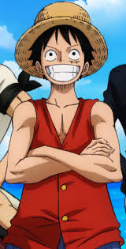

One Piece je japonská manga a anime o chlapci jménem Luffy který se chce stát králem pirítů
Luffy je na začátku série sedmnáctiletý hoch který se sám vypravil hledat poklad One Piece, protože ten kdo tento poklad nalezne se stane králem pirátů. Po celou dobu své cesty potkává nové lidi kteří se k němu na jeho cestu přidávají a chtějí z něj učinit krále pirátů.

První člověk který se k Luffymu přidá je Zoro. Zoro je šermíř jehož cílem je se stát nejlepším šermířem na světě. Luffy Zora potká přivázaného ke kůlu a nabídne mu, že ho zachrání když se k němu přidá. Zoro nemá jinou možnost a nabídku přijme. Zoro se prakticky stává pravou rukou Luffyho.